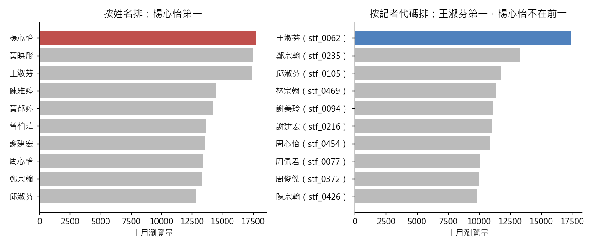

練習 03 - 最佳報導獎發給誰
在本單元中，會介紹第 3 題「本月最佳報導獎要發給誰——請給我十月瀏覽量最高的記者」從頭到尾實際跑一次的方法、跑出來的數字，以及畫出來的圖。
這一頁是做完之後對答案用的。還沒動手的話，先回 Hub - 資料分析練習案例庫 找到這一題，照「怎麼做」那一欄自己跑一次再回來。
題目
有人會這樣問你：內容處要發本月流量獎，月報表按記者姓名排出來第一名是楊心怡，獎金可以直接發給她嗎？
| 難度 | 進階 |
| 組別 | 第 1 組：先把一張表讀對 |
| 用哪張表 | content_monthly_flat（L1）、content_monthly（L2）、content（L2）、staff（L2） |
| 對應單元 | 兩張表接起來才有意義 |
方法
先在月報表去重，按 staff_name 做一份排行榜；再把 content_monthly 接 content（靠 content_id）、content 接 staff（靠 author_primary_id 對 staff_id），改成按記者代碼 staff_id 做第二份排行榜，兩份並排比較。用 Python，因為 pandas 的 merge 可以在接表前後直接比對列數有沒有變（1,444 接完還是 1,444），接壞了、接出重覆列，當場就看得出來。
程式
這一題用 Python，整支程式如下。資料放在 dist/L1 與 dist/L2 兩個資料夾。
from _kmg import *
r = R(3, "本月最佳報導獎要發給誰——請給我十月瀏覽量最高的記者")
f = dedupe(flat())
by_name = f.groupby("staff_name").agg(n=("content_id", "count"), pv=("pv", "sum")).sort_values("pv", ascending=False)
top_name = by_name.index[0]
r.chk("按姓名第一名", "楊心怡", top_name)
r.chk("按姓名第一名則數", 26, int(by_name.iloc[0]["n"]))
r.chk("按姓名第一名瀏覽量", 17726, int(by_name.iloc[0]["pv"]))
cm = l2("content_monthly.csv", parse_dates=["ingest_ts"])
ct, st = l2("content.csv"), l2("staff.csv")
m1 = cm.merge(ct, on="content_id", how="left")
r.chk("接 content 後列數不變", len(cm), len(m1))
m2 = m1.merge(st, left_on="author_primary_id", right_on="staff_id", how="left")
r.chk("接 staff 後列數不變", len(cm), len(m2))
m2 = m2.sort_values("ingest_ts").drop_duplicates(["content_id", "stat_month"], keep="last")
by_id = m2.groupby(["staff_id", "staff_name"]).agg(n=("content_id", "count"), pv=("pv", "sum")).sort_values("pv", ascending=False)
(sid, sname), top = by_id.index[0], by_id.iloc[0]
r.chk("按代碼第一名代碼", "stf_0062", sid)
r.chk("按代碼第一名姓名", "王淑芬", sname)
r.chk("按代碼第一名則數", 16, int(top["n"]))
r.chk("按代碼第一名瀏覽量", 17389, int(top["pv"]))
yang_all = sorted(st.loc[st["staff_name"] == "楊心怡", "staff_id"])
r.chk("staff 表裡叫楊心怡的人數", 5, len(yang_all))
ylist = by_id.reset_index()
yang = ylist[ylist["staff_name"] == "楊心怡"].set_index("staff_id")
r.chk("十月有發稿的楊心怡", ["stf_0025", "stf_0088", "stf_0166", "stf_0311"], sorted(yang.index))
r.chk("楊心怡中瀏覽量最高者", "stf_0025", yang["pv"].idxmax())
r.chk("瀏覽量最高那位的則數", 6, int(yang.loc["stf_0025", "n"]))
r.chk("瀏覽量最高那位的瀏覽量", 8944, int(yang.loc["stf_0025", "pv"]))
r.chk("楊心怡中發最多則者", "stf_0088", yang["n"].idxmax())
r.chk("發最多則那位的則數", 11, int(yang.loc["stf_0088", "n"]))
r.chk("發最多則那位的瀏覽量", 6079, int(yang.loc["stf_0088", "pv"]))
r.chk("staff_id 不重複數", 480, int(st["staff_id"].nunique()))
r.chk("staff_name 不重複數", 279, int(st["staff_name"].nunique()))
shared = set(st.groupby("staff_name")["staff_id"].nunique().loc[lambda s: s > 1].index)
r.chk("作者姓名被別人共用的則數", 989, int(f["staff_name"].isin(shared).sum()))
# 課堂概念：entropy。480 個代碼平均分，要幾 bits 才分得開；只知道姓名，平均還剩多少
cnt = st.groupby("staff_name")["staff_id"].nunique()
r.chk("分開 480 個代碼需要的 bits", 8.91, float(np.log2(st["staff_id"].nunique())), tol=0.005)
r.chk("知道姓名後平均還剩的 bits", 0.96, float((cnt / cnt.sum() * np.log2(cnt)).sum()), tol=0.005)
r.chk("同名最多幾人", 5, int(cnt.max()))
r.pit(top_name != sname, "按姓名排的第一名是%s（其實是四個人加起來），按代碼排的第一名是%s，不是同一個人" % (top_name, sname))
top10_name = list(by_name.index[:10])
top10_id = list(ylist["staff_name"][:10])
gap = int(st["staff_id"].nunique() - st["staff_name"].nunique())
r.sc(gap == 201 and top10_name != top10_id, "記者代碼比姓名多 %d 個；按姓名與按代碼的前十名不一樣：%s" % (
gap, "是" if top10_name != top10_id else "否"))
fig, ax = plt.subplots(1, 2, figsize=(10, 4.2))
bn = by_name.head(10).iloc[::-1]
ax[0].barh(bn.index, bn["pv"], color=["#c0504d" if n == "楊心怡" else "#bbbbbb" for n in bn.index])
ax[0].set_title("按姓名排：楊心怡第一")
ax[0].set_xlabel("十月瀏覽量")
bi = ylist.head(10).iloc[::-1]
labels = ["%s（%s）" % (n, s) for s, n in zip(bi["staff_id"], bi["staff_name"])]
ax[1].barh(labels, bi["pv"], color=["#4f81bd" if s == "stf_0062" else "#bbbbbb" for s in bi["staff_id"]])
ax[1].set_title("按記者代碼排：王淑芬第一，楊心怡不在前十")
ax[1].set_xlabel("十月瀏覽量")
save_fig(fig, "ex03_rank_name_vs_id.png")
r.save()
程式裡的 r.chk(項目, 預期值, 實算值) 是對照檢查，把入口頁寫的數字跟實際算出來的放在一起比；r.pit 記錄坑有沒有出現，r.sc 記錄自己驗那一步有沒有效。畫圖的部分在程式最後面。
程式開頭的 from _kmg import * 載入共用的讀檔、去重、換幣別與畫圖函式，內容在 練習 01 - 月會上的則數對不對 的「共用的讀檔函式」那一段。
結果
兩份排行榜的第一名不是同一個人。月報表只給記者姓名，按姓名排出來是「楊心怡 26 則、17,726 次瀏覽」；但 staff 表裡 480 個記者代碼只對應到 279 個不同姓名，staff 表裡叫楊心怡的有五個人，十月有發稿的是其中四個（stf_0025、stf_0088、stf_0166、stf_0311）；四個人裡瀏覽量最高的 stf_0025 只有 6 則、8,944 次，發最多則的 stf_0088 也只有 11 則、6,079 次。真正的第一名是代碼 stf_0062 的王淑芬，16 則、17,389 次瀏覽。全部 1,438 則裡有 989 則（將近七成）的作者姓名被別人共用，所以這不是剛好撞名的偶發狀況。
實際跑出來的數字
下表每一列都是程式實際算出來的值，23 項全部跟上面那段文字對得起來。
| 項目 | 實跑結果 |
|---|---|
| 按姓名第一名 | 楊心怡 |
| 按姓名第一名則數 | 26 |
| 按姓名第一名瀏覽量 | 17726 |
| 接 content 後列數不變 | 1444 |
| 接 staff 後列數不變 | 1444 |
| 按代碼第一名代碼 | stf_0062 |
| 按代碼第一名姓名 | 王淑芬 |
| 按代碼第一名則數 | 16 |
| 按代碼第一名瀏覽量 | 17389 |
| staff 表裡叫楊心怡的人數 | 5 |
| 十月有發稿的楊心怡 | stf_0025、stf_0088、stf_0166、stf_0311 |
| 楊心怡中瀏覽量最高者 | stf_0025 |
| 瀏覽量最高那位的則數 | 6 |
| 瀏覽量最高那位的瀏覽量 | 8944 |
| 楊心怡中發最多則者 | stf_0088 |
| 發最多則那位的則數 | 11 |
| 發最多則那位的瀏覽量 | 6079 |
| staff_id 不重複數 | 480 |
| staff_name 不重複數 | 279 |
| 作者姓名被別人共用的則數 | 989 |
| 分開 480 個代碼需要的 bits | 8.9069 |
| 知道姓名後平均還剩的 bits | 0.9618 |
| 同名最多幾人 | 5 |
圖表

同一份資料排兩次。左邊按姓名加總，四個叫楊心怡的人被加成一個；右邊按記者代碼加總，第一名換人，四個楊心怡都不在前十。
這題的坑，實際跑的時候有沒有出現
拿姓名當識別碼。月報表看起來「一張表就夠用了」，姓名也很像唯一值，但人名會重複、識別碼才不會；接第二張表不是為了讓報表變漂亮，是因為第一張表根本沒有能認出是哪一個人的欄位。另外別忘了先做去重，否則那 6 則重送會讓某幾位記者白白多一則。
實際跑的結果：按姓名排的第一名是楊心怡（其實是四個人加起來），按代碼排的第一名是王淑芬，不是同一個人。
自己驗那一步抓不抓得到錯
比對 staff 表的 staff_id.nunique()（480）與 staff_name.nunique()（279），差了 201 就代表姓名不能當識別碼；再把按姓名與按代碼的兩份前十名並排，只要名次有換人，就以按代碼的那一份為準。
實際跑的結果：記者代碼比姓名多 201 個；按姓名與按代碼的前十名不一樣：是。
連到課堂概念
entropy
480 個記者代碼要 8.91 bits 才分得開；只知道姓名的話，平均還剩 0.96 bits 的不確定性，等於還要在大約兩個人裡面猜。「姓名不能當識別碼」用數字講就是這一句。見 Entropy 與 Shannon 資訊理論
接著做
上一題 練習 02 - 程序化平台該不該停、下一題 練習 04 - 深度報導值不值得做，或回到 Hub - 資料分析練習案例庫 挑別的題目。
學生版｜更新於 2026-09-13 10:38